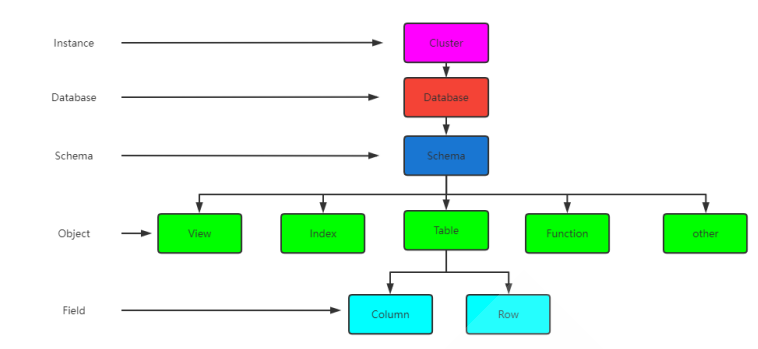
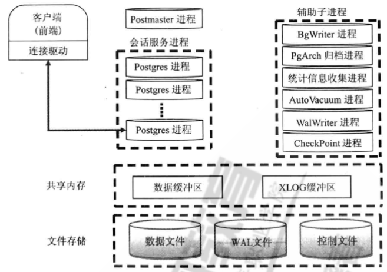
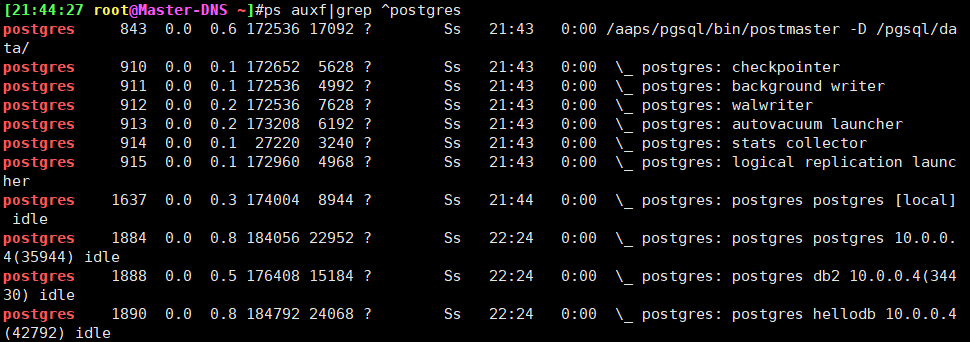
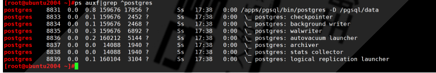
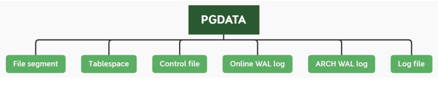

[TOC]
1 总结pg和mysql的优劣势。 MySQL相对于PostgreSQL的劣势：
MySQL PostgreSQL
最重要的引擎InnoDB很早就由Oracle公司控制。目前整个MySQL数据库都由Oracle控制。
BSD协议，没有被大公司垄断。
对复杂查询的处理较弱，查询优化器不够成熟
很强大的查询优化器，支持很复杂的查询处理。
只有一种表连接类型:嵌套循环连接(nested-loop),不支持排序-合并连接(sort-merge join)与散列连接(hash join)。
都支持
性能优化工具与度量信息不足
提供了一些性能视图，可以方便的看到发生在一个表和索引上的select、delete、update、insert统计信息，也可以看到cache命中率。网上有一个开源的pgstatspack工具。
InnoDB的表和索引都是按相同的方式存储。也就是说表都是索引组织表。这一般要求主键不能太长而且插入时的主键最好是按顺序递增，否则对性能有很大影响。
不存在这个问题。
大部分查询只能使用表上的单一索引;在某些情况下，会存在使用多个索引的查询,但是查询优化器通常会低估其成本,它们常常比表扫描还要慢。
不存在这个问题
表增加列，基本上是重建表和索引，会花很长时间。
表增加列，只是在数据字典中增加表定义，不会重建表
存储过程与触发器的功能有限。可用来编写存储过程、触发器、计划事件以及存储函数的语言功能较弱
除支持pl/pgsql写存储过程，还支持perl、python、Tcl类型的存储过程：pl/perl，pl/python，pl/tcl。 也支持用C语言写存储过程。
不支持Sequence。
支持
不支持函数索引，只能在创建基于具体列的索引。 不支持物化视图。
支持函数索引，同时还支持部分数据索引，通过规则系统可以实现物化视图的功能。
执行计划并不是全局共享的, 仅仅在连接内部是共享的。
执行计划共享
MySQL支持的SQL语法(ANSI SQL标准)的很小一部分。不支持递归查询、通用表表达式（Oracle的with 语句）或者窗口函数（分析函数）。
都 支持
不支持用户自定义类型或域(domain)
支持。
对于时间、日期、间隔等时间类型没有秒以下级别的存储类型
可以精确到秒以下。
身份验证功能是完全内置的，不支持操作系统认证、PAM认证，不支持LDAP以及其它类似的外部身份验证功能。
支持OS认证、Kerberos 认证 、Ident 的认证、LDAP 认证、PAM 认证
不支持database link。有一种叫做Federated的存储引擎可以作为一个中转将查询语句传递到远程服务器的一个表上,不过,它功能很粗糙并且漏洞很多
有dblink，同时还有一个dbi-link的东西，可以连接到oracle和mysql上。
Mysql Cluster可能与你的想象有较大差异。开源的cluster软件较少。 复制(Replication)功能是异步的,并且有很大的局限性.例如,它是单线程的(single-threaded),因此一个处理能力更强的Slave的恢复速度也很难跟上处理能力相对较慢的Master.
有丰富的开源cluster软件支持。
explain看执行计划的结果简单。
explain返回丰富的信息。
类似于ALTER TABLE或CREATE TABLE一类的操作都是非事务性的.它们会提交未提交的事务，并且不能回滚也不能做灾难恢复
DDL也是有事务的。
PostgreSQL主要优势：
1. PostgreSQL完全免费，而且是BSD协议，如果你把PostgreSQL改一改，然后再拿去卖钱，也没有人管你，这一点很重要，这表明了PostgreSQL数据库不会被其它公司控制。oracle数据库不用说了，是商业数据库，不开放。而MySQL数据库虽然是开源的，但现在随着SUN被oracle公司收购，现在基本上被oracle公司控制，其实在SUN被收购之前，MySQL中最重要的InnoDB引擎也是被oracle公司控制的，而在MySQL中很多重要的数据都是放在InnoDB引擎中的，反正我们公司都是这样的。所以如果MySQL的市场范围与oracle数据库的市场范围冲突时，oracle公司必定会牺牲MySQL，这是毫无疑问的。
MySQL相对于PG的优势
1.innodb的基于回滚段实现的MVCC机制，相对PG新老数据一起存放的基于XID的MVCC机制，是占优的。新老数据一起存放，需要定时触 发VACUUM，会带来多余的IO和数据库对象加锁开销，引起数据库整体的并发能力下降。而且VACUUM清理不及时，还可能会引发数据膨胀。
2.MySQL采用索引组织表，这种存储方式非常适合基于主键匹配的查询、删改操作，但是对表结构设计存在约束。
3.MySQL的优化器较简单，系统表、运算符、数据类型的实现都很精简，非常适合简单的查询操作。
4.MySQL相对于PG在国内的流行度更高，PG目前在国使用量相对少。
5.MySQL的存储引擎插件化机制，使得它的应用场景更加广泛，比如除了innodb适合事务处理场景外，myisam适合静态数据的查询场景。
2 总结pg二进制安装和编译安装。 2.1 二进制安装 各linux发行版中大多都内置了PGSQL的二进制安装包，但内置版本相对旧一些，对于二进制包的安装方法是通过不同发行版本的Linux下的包管理器进行的，如在RHEL系统相关版本下用yum命令，在Ubuntu下用apt命令。
2.2 源码编译安装 2.2.1 编译安装过程说明 第一步：下载源代码
1 2 https://www.postgresql.org/ftp/source/
第二步：编译安装。过程与Linux下其他软件的编译安装过程相同
./configure
make
make install
第三步：编译安装完成后执行如下步骤
使用initdb命令初使用化数据库
启动数据库实例
2.2.2 系统初始化和优化配置 1 2 3 4 5 6 7 8 9 10 11 12 13 14 15 16 17 18 19 20 # 关闭防火墙和SELinux等 # 内核参数优化 # vi /etc/sysctl.conf # vim /etc/security/limits.conf
2.2.3 安装依赖包 1 2 3 4 5 # RHEL系统 # ubuntu
2.2.4 源码编译安装 1 2 3 4 5 6 7 8 9 10 11 12 13 14 15 16 17 18 19 20 21 22 23 24 25 26 27 28 29 # 下载解压缩 # 查看安装说明 # 开始编译三步曲，默认安装在/usr/local/pgsq1 # 查看编译选项（可选）
2.2.5 创建数据库用户和组 PostgreSQL默认不支持以root身份启动服务，虽然也可修改源码实现root启动，但基于安全考虑不建议，因此必须创建一个用于启动PostgrepSQL的普通用户
1 2 3 4 # 创建数据库用户和组，注意此用户需要可以交互登录
2.2.6创建数据目录并授权 1 2 [22:11:46 root@rocky8 ~]#mkdir -pv /pgsql/data/
2.2.7设置环境变量 1 2 3 4 5 6 7 8 9 10 11 12 13 [22:14:38 root@rocky8 ~]#vim /etc/profile.d/pgsql.sh# 验证
2.2.8初始化数据库 1 2 3 4 5 6 7 8 9 10 11 12 13 14 15 [22:19:15 root@rocky8 ~]#su - postgres# 初始化 # 如果没有指定选项-D<datadir>，按环境变量$PGDATA 指定的路径进行初始化 # 生产建议初始化方式
2.2.9 启动和关闭服务 1 2 3 4 5 6 7 8 9 10 11 12 13 14 15 16 17 18 19 20 21 22 23 24 25 26 27 28 29 30 31 32 33 # 启动 # 停止 # 启动命令： # 停止数据库的命令如下： # smart关闭 # fast关闭，推荐使用，也是默认模式 # immediate 相当于ki11-9 # 或者发送信号，直接向数据库主进程发送的signal信号有以下三种。 # 重启 # 源码目录中内置PostgresQL的启动脚本
范例：实现开机自启动PostgreSQL
1 2 3 4 5 6 7 8 9 10 11 [22:49:16 root@rocky8 ~]#cp postgresql-12.9/contrib/start-scripts/linux /etc/init.d/postgressql# 修改下面两行
范例：创建 service 文件
1 2 3 4 5 6 7 8 9 10 11 12 13 14 15 16 17 18 19 20 21 22 23 24 25 26 27 28 29 30 31 32 33 34 35 36 37 38 39 40 41 42 43 44 45 46 47 # 创建新的service文件 # 确认文件内容 # /usr/lib/systemd/system/postgresql.service
2.2.10 查看编译和相关信息 1 2 3 4 5 6 7 8 9 10 11 12 13 14 15 16 17 18 19 20 21 22 23 24 [14:42:03 root@rocky8 ~]#pg_config
2.2.11 源码编译安装脚本 1 2 3 4 5 6 7 8 9 10 11 12 13 14 15 16 17 18 19 20 21 22 23 24 25 26 27 28 29 30 31 32 33 34 35 36 37 38 39 40 41 42 43 44 45 46 47 48 49 50 51 52 53 54 55 56 57 58 59 60 61 62 63 64 65 66 67 68 69 70 71 72 73 74 75 76 77 78 79 80 81 82 83 84 85 86 87 88 89 90 91 92 93 94 95 96 97 98 99 100 101 102 103 104 105 106 107 108 109 110 111 112 113 114 # !/bin/bash # # Author: tangbeiting # QQ: 306876058 # Date: 2023-09-16 # FileName: postgresql_src_install.sh # URL: https://xiaohexie00.github.io/ # Description: The test script # Copyright (C): 2023 ALL rights reserved # **************************************************************************
3 总结pg服务管理相关命令 pg_ctl 和pgsql命令选项及示例和不同系统的初始化操作 3.1 pg_ctl 命令管理PostgreSQL pg_ctl是一个实用的命令行工具，有以下常见功能：
初始化 PostgresQL数据库实例
启动、终止或重启PostgresQL数据库服务。
查看PostgreSQL数据库服务的状态
让数据库实例重新读取配置文件。允许给一个指定的PostgresQL进程发送信号
控制 standby 服务器为可读写
在Windows平台下允许为数据库实例注册或取消一个系统服务
pc_ctl 命令格式
1 2 3 4 5 6 7 8 9 10 11 12 13 14 15 16 [16:58:00 root@rocky8 ~]#pg_ctl --help
3.2初始化实例 初始化PostgresQL数据库实例的命令如下：
1 2 3 4 5 6 7 8 9 10 11 # 先切换用户 # 初始化数据库 # pg_ctl命令调用initdb命令创建了一个新的PostgresQL数据库实例，参数说明如下。
范例：创建新的数据库实例数据
1 2 3 4 5 6 7 8 9 10 11 12 13 14 15 16 17 18 19 20 21 22 23 24 25 26 27 28 29 30 31 32 33 34 35 36 37 38 39 [17:31:01 root@Master-DNS ~]#chown postgres: /pgsql/
3.3服务管理 3.3.1查看服务状态 查询数据库实例状态的命令如下：
1 pg_ctl status [-D datadir]
范例：
1 2 3 [17:34:55 postgres@Master-DNS ~]$pg_ctl status -D /pgsql/data2
3.3.2启动服务 启动PostgreSQL服务的命令：
1 2 3 4 5 6 7 8 9 10 11 pg_ctl start [-w] [-t seconds] [-s] [-D datadir] [-1 filename] [-o options] [-ppath] [-c]# 参数说明如下。
范例：
1 2 3 4 5 6 7 8 9 10 11 [17:40:57 postgres@Master-DNS ~]$pg_ctl status -D /pgsql/data2
3.3.3停止服务 停止PostgresQL数据库的命令如下：
1 2 3 4 pg_ctl stop [-w] [-t seconds] [-s] [-D datadir] [-m s[mart] 1 f[ast] | i[mmediate] ]# 参数说明如下。
范例：
1 2 3 4 5 6 7 8 9 10 11 [17:42:00 postgres@Master-DNS ~]$pg_ctl stop -D /pgsql/data2
2.3.2.4重启服务 重启PostgresQL数据库的命令如下：
1 2 3 pg_ctl restart [-w] [-t seconds][-s] [-D datadir] [-c] [-m s[mart] [ f[ast] [i[mmediate] ] [-o "options ]# 此命令中的参数与启动或停止命令中的参数含义相同
3.3.4加载配置 在配置文件中改变参数后，需要使用上面这条命令使参数生效
1 2 3 4 5 6 7 8 9 # 修改配置文件 postgresql.conf后，让修改生效的方法有两种 # 方法一：在操作系统使用下面命令 # 方法二：在psql中使用如下命令 # 注意：加载配置操作只针对一些配置的修改生效，有些配置需要重新启动服务才能生效
范例：
1 2 3 4 5 6 7 8 9 10 11 12 13 14 15 16 17 18 19 20 21 22 23 24 # 注意：修改端口不支持reload,只能restart # 修改端口
4 总结pg数据库结构组织 4.1数据库的结构组织 
在一个PostgreSQL数据库系统中，数据的组织结构可以分为以下五层：
实例：一个PostgreSQL对应一个安装的数据目录$PGDATA,即一个instance实例
数据库：一个PostgresQL数据库服务下可以管理多个数据库，当应用连接到一个数据库时，一般只能访问这个数据库中的数据，而不能访问其他数据库中的内容
默认情况下初始实例只有三个数据库：postgres、templateo、template1
模式：一个数据库可以创建多个不同的名称空间即Schema,用于分隔不同的业务数据
表和索引：一个数据库可以有多个表和索引。在PostgreSQL中表的术语称为Relation，而在其他数据库中通常叫Table
行和列：每张表中有很多列和行数据。在PostgreSQL中行的术语一般为“Tuple”，而在其他数据库中则叫”Row”。
4.2 PostgreSQL中的术语 PostgreSQL有一些术语与其他数据库中不一样，了解了这些术语的意思，就能更好地看懂PostgreSQL中的文档。
与其他数据库不同的术语如下。
Relation:表示表table或索引index,具体表示的是Table还是Index需要看具体情况
Tuple：表示表中的行，在其他数据库中使ROW来表示
Segment:每个表和索引都单独对应一个文件,即为segment,如果文件大小超过1GB,会创建多个相同名称但后缀不同的文件
Page：表示在磁盘中的数据块。在文件中以块为单位存放数据，默认值为8KB,最大可以为32KB
Buffer：表示在内存中的数据块。
范例：编译时可以指定segment大小
1 2 3 [18:00:19 root@rocky8 postgresql-12.9]#./configure --help | grep segment
4.3模版数据库template0和template1 template1和template0是PostgreSQL的模板数据库。所谓模板数据库就是创建新database时,PostgreSQL会基于模板数据库制作一份副本，其中会包含所有的数据库设置和数据文件。
PostgreSQL安装好以后会默认附带两个模板数据库：默认模板库为template1和template1。
默认模板库为template1,也可以指定template0
比如:create database db1 template template0
不要对templateo模板数据库进行任何修改，因为这是原始的干净模板
如果其它模板数据库被搞坏了，基于这个数据库做一个副本就可以了。
如果希望定制自己的模板数据库，那么请基于template1进行修改，或者自己另外创建一个模板数据库再修改。
template1和template0的区别主要有两点：
template1可以连接,template0不可以连接。
使用template1模板库建库时不可指定新的encoding和locale,而template0可以。
注意：template0和template1都不能被删除。
4.4模式schema 模式schema是数据库中的一个概念，可以将其理解为一个命名空间。不同的模式下可以有相同名称的表、函数等对象且互相不冲突。提出模式的概念是为了便于管理，只要有权限，每个模式(schema)的对象可以互相调用。
在PostgreSQL中，一个数据库包含一个或多个模式，一个模式中又包含了表、函数及操作符等数据库对象。
在PostgresQL中，不能同时访问不同数据库中的对象，当要访问另一个数据库中的表或其他对象时，需要重新连接到这个新的数据库，而模式没有此限制。一个用户在连接到一个数据库后，就可以同时访问这个数据库中多个模式的对象。
通常情况下，创建和访问表的时候都不用指定模式，实际上这时访问的都是public模式。每当我们创建一个新的数据库时，PostgreSQL都会自动创建一个名为public的模式。当登录到该数据库时，如果没有特殊的指定，都是以该模式public操作各种数据对象的。
我们需要使用模式有以下几个主要原因：
允许多个用户在使用同一个数据库时彼此互不干扰。
把数据库对象放在不同的模式下，然后组织成逻辑组，让它们更便于管理。
第三方的应用可以放在不同的模式中，这样就不会和其他对象的名字冲突了。
1 2 3 4 5 6 7 8 # 创建模式 # 删除模式 # 查看模式
要访问指定模式中的对象，需要先指定一个包含模式名及表名的名字，模式和表之间用一个“点”分开，
如下：
5 实现pg远程连接。输入密码和无密码登陆 范例：实现远程连接
1 2 3 4 5 6 7 8 9 10 11 12 13 14 15 16 17 18 19 20 21 22 23 24 25 26 27 28 29 30 # 修改用户postgres密码 # 查看监听地址和端口，默认为127.0.0.1：5432 # IPv4 local connections: # 重启服务生效 # 测试远程登录
范例：利用.pgpass文件实现免密码连接远程posgresql
1 2 3 4 5 6 7 8 9 10 11 12 13 14 15 16 17 18 19 20 21 22 23 24 25 26 27 28 29 30 [22:31:43 root@rocky8 ~]#vim .pgpass# 格式：hostname:port:database:username:password # psq1默认连接本机，需要指定和.pgpass文件内容相匹配信息才可以使用.pgpass文件连接
6 总结库，模式，表的添加和删除操作。表数据的CURD。同时总结相关信息查看语句。 6.1数据库的创建和删除 创建数据库可以使用SQL语句create database实现，也可以利用createdb命令创建数据库
createdb是一个SQL命令CREATE DATABASE的封装。
createdb 命令语法格式如下：
1 2 3 4 5 6 7 8 9 10 11 12 13 14 15 16 17 createdb [option...] [dbname [description]]
删除数据库可以使用SQL语句drop database 实现
范例：创建数据库
1 2 3 4 5 6 7 8 9 10 11 12 13 14 15 16 17 18 19 20 # 方法1 # 方法2
范例：删除数据库
1 2 [20:44:36 root@Master-DNS ~]#psql
范例：查看数据库存放目录的路径
1 2 3 4 5 6 7 8 9 10 11 12 13 postgres=# select oid,datname from pg_database;
6.2管理和查看模式 一个数据库包含一个或多个已命名的模式，模式又包含表。模式还可以包含其它对象，包括数据类型、函数、操作符等。同一个对象名可以在不同的模式里使用而不会导致冲突；比如，schema1和schema2都可以包含一个名为test的表
1 2 3 4 5 6 7 8 9 10 11 12 13 14 15 16 17 18 19 20 21 22 23 24 25 26 27 28 29 30 31 32 33 34 35 36 37 38 39 40 41 42 43 44 45 46 47 48 49 50 51 52 53 54 55 56 57 58 59 # 创建模式 # 删除模式 # 列出所有schema
6.3查看和连接数据库 1 2 3 4 5 6 7 8 9 10 11 12 13 14 15 16 17 18 19 20 21 22 23 24 25 26 27 28 29 30 31 32 33 34 35 36 37 38 39 40 41 42 43 44 45 46 47 48 49 50 51 52 # 列出所有数据库名，相当于MySQL中的show databases; # 显示数据库详细信息，比如大小 # 查看当前连接信息 # 查看当前来南京详细信息 # 连接数据库，相当于use
6.4管理表 PostgreSQL支持多种数据类型实现表结构的创建
范例：查看支持数据类型
1 2 3 4 5 6 7 8 9 10 11 12 13 14 15 16 17 18 19 20 21 22 db2=# select typname from pg_type;
范例：管理表
1 2 3 4 5 6 7 8 9 10 11 12 13 14 15 16 17 18 19 20 21 22 23 24 25 26 27 28 29 30 31 32 33 34 35 36 37 38 39 40 41 42 43 44 45 46 47 48 49 50 51 52 53 54 55 56 57 58 59 60 61 62 63 64 65 66 67 68 69 70 71 testdb=# \c testdb # # 复制表结构，不复制数据
6.5表的CRUD SQL的CRUD,即Insert,update,delete,select 四条语句范例:：
1 2 3 4 5 6 7 8 9 10 11 12 13 14 15 16 17 18 19 20 21 22 23 24 25 26 27 28 29 30 31 32 33 34 35 36 37 38 39 40 41 42 43 44 45 46 47 48 49 50 51 52 53 54 55 56 57 58 59 60 61 testdb=# create table tb2 (id serial ,name varchar(10));# 清空表
范例：查看表的列信息及大小
1 2 3 4 5 6 7 8 9 10 11 12 13 14 15 testdb=# \d tb2;
范例：
1 2 3 4 5 6 7 8 9 10 11 testdb=# select generate_series(3,6);
7 总结pg的用户和角色管理。 在PostgreSQL中，用户与角色是没有区别的。
用户和角色可以用来实现以下功能：
创建用户与角色的语法如下：
1 2 3 4 5 6 7 8 9 10 11 12 13 14 15 16 17 18 19 20 21 22 CREATE USER name [[WITH] option [ ...]]# 上面两个命令都可以创建用户，不同的是CREATE USER创建的用户默认可以登录，而CREATE ROLE不可以登录 # 除了CREATE USER默认创建出来的用户有LOGIN的权限，而CREATE ROLE 创建出来的用户没有“LOGIN”的权限之外，CREATE RULE 与 CREATE USER没有其他任何的区别。 # 上面语法中的“option”可以是如下内容。
7.2用户管理案例 1 2 3 4 5 6 7 8 9 10 11 12 13 14 15 16 17 18 19 20 21 22 # 查看帮助 # 以下两个命令用法相似 # 修改用户 # 删除用户 # 显出所有用户和角色 # \du 和\dg命令等价。原因是在PostgreSQL数据库中用户和角色不分的。
范例：
1 2 3 4 5 6 7 8 9 10 11 12 13 14 15 16 17 18 19 20 21 22 23 24 25 26 27 28 29 30 31 32 33 34 35 36 37 38 39 40 41 42 43 44 45 46 47 48 49 50 51 # 创建可以登录的用户和密码 # 创建不可登录用户 # 创建可以连接的用户 # 创建管理员 # 创建复制用户 # 修改密码 # 修改权限和密码 # 删除用户 # 查看用户信息 # 查看指定用户信息
范例：修改 postgres用户密码
1 2 3 4 5 6 7 8 # 使用postgres用户登录（PostgresSQL安装后会自动创建postgres用户） # 登录postgresq1数据库 # 安全起见，修改数据库管理员postgres用户的密码
7.3权限管理 在PostgreSQL数据库中，每个数据库的对象（包括数据库）都有一个所有者，也就是说任何数据库对象都是属于某个用户的，所有者默认就拥有所有权限。所以不需要把对象的权限再赋给所有者。自己创建的数据库对象，自己当然有全部的权限。当然，所有者出于安全考虑也可以选择废弃一些自己的权限。在PostsgreSQL数据库中，删除一个对象及任意修改它的权利是所有者固有的，不能被赋予或撤销。所有者也隐含地拥有把操作该对象的权限赋给别人的权利。
一个用户的权限分为两类，一类是在创建用户时就指定的权限，这些权限如下：
超级用户的权限
创建数据库的权限
是否允许LOGIN的权限
以上这些权限是创建用户时指定的，后续可使用ALTER ROLE命令来修改。
还有一类权限，是由命令GRANT和REVOKE来管理的，这些权限如下：
在数据库中创建模式（SCHEMA)
允许在指定的数据库中创建临时表连接某个数据库
在模式中创建数据库对象，如创建表、视图函数等
在一些表中做SELECT、UPDATE、INSERRDELETE等操作等
1 2 3 4 5 6 7 # GRANT命令有两个作用 # 1.让某个用户成为某个角色的成员，从而使其拥有角色的权限： # 2.把某些数据库逻辑结构对象的操作权限赋予某个用户(或角色)，命令的格式如下：
PostgresQL中的权限是按以下几个层次进行管理的：
cluster权限：实例权限通过pg_hba.conf配置
管理赋在用户特殊属性上的权限，如超级用户的权限、创建数据库的权限、创建用户的权限、Login权限等
在数据库中创建模式的权限
表空间权限：通过grant/revoke控制权限操作表，物化视图，索引等
在模式中创建数据库对象的权限，如创建表、创建索引，等等
查询表、往表中插入数据、更新表、删除表中数据的权限
操作表中某些字段的权限
7.4权限案例 范例：
1 2 3 4 5 6 7 8 9 10 11 12 13 14 15 16 17 18 19 20 # 授权创建新数据库 # database权限设置 # schema权限 # 创建test 的schema指定所有者为joe # object权限 # 创建数据库并指定所有者的用户
范例：创建业务用户和授权
1 2 3 4 5 6 7 8 9 10 11 12 13 postgres=# create database pinxixi;# 方法1 # 方法2 # 方法3
范例：
1 2 3 4 5 6 # 将创建一个名为“readonly ”的用户 # 把在public的schema下现有的所有表的SELECT 权限赋给用户readonly
8 添加mage用户，magedu模式，准备zabbix库，配置mage用户的默认模式magedu，要求mage用户给zabbix库有所有权限。 1 2 3 4 5 6 7 8 9 10 11 postgres=# create user mage with password '123456';
9 总结pgsql的进程结构，说明进程间如何协同工作的。 
9.1进程
Postmaster主进程
它是整个数据库实例的主控制进程，负责启动和关闭该数据库实例。
实际上，使用pg ctl来启动数据库时，pg_ctl也是通过运行postgres来启动数据库的，只是它做了一些包装，更容易启动数据库。
它是第一个PostgresQL进程，此主进程还会fork出其他子进程，并管理它们。
当用户和PostgreSQL建立连接时，首先是和Postmaster进程建立连接。首先，客户端会发出身份验证的信息给Postmaster进程，Postmaster进程根据消息中的信息进行身份验证判断，如果验证通过，它会fork出一个会话子进程为这个连接服务。
当某个服务进程出现错误的时候，Postmaster主进程会自动完成系统的恢复。恢复过程中会停掉所有的服务进程，然后进行数据库数据的一致性恢复，等恢复完成后，数据库又可以接受新的连接。
验证功能是通过配置文件pg_hba.conf和用户验证模块来提供。
postmaster程序是指向postgres的软链接
1 2 [22:39:20 root@Master-DNS ~]#ll /aaps/pgsql/bin/postmaster
BgWriter 后台写进程
为了提高插入、删除和更新数据的性能，当往数据库中插入或者更新数据时，并不会马上把数据持久化到数据文件中，而是先写入Buffer中
该辅助进程可以周期性的把内存中的脏数据刷新到磁盘中
WalWriter 预写式日志进程
WAL是write ahead log的缩写,WAL log旧版中称为xlog,相当于MySQL中Redo log
预写式日志是在修改数据之前，必须把这些修改操作记录到磁盘中，这样后面更新实际数据时，就不需要实时的把数据持久化到文件中了。即使机器突然宕机或者数据库异常退出，导致一部分内存中的脏数据没有及时的刷新到文件中，在数据库重启后，通过读取WAL日志，并把最后一部分WAL日志重新执行一遍，就能恢复到宕机时的状态了
WAL日志保存在pg_wal目录（早期版本为pg_xlog)下。每个xlog文件默认是16MB,为了满足恢复要求，在pg_wal目录下会产生多个WAL日志，这样就可保证在宕机后，未持久化的数据都可以通过WAL日志来恢复，那些不需要的WAL日志将会被自动覆盖
Checkpointer 检查点进程
检查点（Checkpoints)是事务序列中的点，保证在该点之前的所有日志信息都更新到数据文件中。
在检查点时，所有脏数据页都冲刷到磁盘并且向日志文件中写入一条特殊的检查点记录。在发生崩溃的时候，恢复器就知道应该从日志中的哪个点（称做redo记录）开始做REDO操作，因为在该记录前的对数据文件的任何修改都已经在磁盘上了。在完成检查点处理之后，任何在redo记录之前写的日志段都不再需要，因此可以循环使用或者删除。在进行WAL归档的时候，这些日志在循环利用或者删除之前应该必须先归档保存
检查点进程（CKPT)在特定时间自动执行一个检查点,通过向数据库写入进程(BgWriter)传递消息来启动检查点请求
AutoVacuum 自动清理进程
执行delete操作时，旧的数据并不会立即被删除，在更新数据时，也不会在旧的数据上做更新，而是新生成一行数据。旧的数据只是被标识为删除状态，在没有并发的其他事务读到这些旧数据时，它们才会被清除掉
autovacuum lanucher负责回收垃圾数据的master进程，如果开启了autovacuum的话，那么postmaster会fork这个进程
autovacuum worker负责回收垃圾数据的worker进程,是lanucher进程fork出来的
PgStat统计数据收集进程
此进程主要做数据的统计收集工作
收集的信息主要用于查询优化时的代价估算。统计的数据包括对一个表或索引进行的插入、删除、更新操作，磁盘块读写的次数以及行的读次数等。
系统表pg_statistic中存储了PgStat收集的各类统计信息
PgArch归档进程
默认没有此进程，开启归档功能后才会启动archiver进程
WAL日志文件会被循环使用，也就是说WAL日志会被覆盖，利用PgArch进程会在覆盖前把WAL日志备份出来，类似于binlog,可用于备份功能
PostgreSQL从8.X版本开始提供了PITR(Point-In-Time-Recovery)技术,即就是在对数据厍进行过一次全量备份后，该技术将备份时间点后面的WAL日志通过归档进行备份，将来可以使用数据库的全量备份再加上后面产生的WAL日志，即可把数据库向前恢复到全量备份后的任意一个时间点的状态
SysLogger 系统日志进程
默认没有此进程，配置文件postgresql.conf 设置参数logging_collect设置为“on”时，主进程才会启动SysLogger辅助进程
它从Postmaster主进程、所有的服务进程以及其他辅助进程收集所有的stderr输出，并将这些输出写入到日志文件中
startup启动进程
Session 会话进程
每一个用户发起连接后，一旦验证成功，postmaster进程就会fork一个新的子进程负责连接此用户。
通常表现为进程形式：postgres postgres [local] idle
案例：查看进程

1 2 3 4 5 6 7 8 [21:44:27 root@Master-DNS ~]#ps auxf|grep ^postgres
范例：开启归档后再查看进程

10 总结pgsql的数据目录中结构，说明每个文件的作用，并可以配上一些示例说明文件的作用。 数据库目录介绍 
数据库数据存放在环境变量PGDATA指向数据目录。这个目录是在安装时指定的，所以在安装时需要指定一个合适的目录作为数据目录的根目录，而且，每一个数据库实例都要有一个对应的目录。目录的初始化是使用initdb来完成的。
初始化完成后，PGDATA数据目录下就会生成三个配置文件。
1 2 3 postgresql.conf#数据库实例的主配置文件，基本上所有的配置参数都在此文件中。
此外在PGDATA目录下还会生成如下一些子目录
1 2 3 4 5 6 7 8 9 10 11 12 13 14 15 16 17 18 19 base #默认表空间的目录，每个数据库都对应一个base目录下的子目录，每个表和索引对应一个独立文件pg_clog# 存储事务提交状态数据 pg_1og# 数据库系统日志目录，在查询一些系统错误时就可查看此目录下日志文件。(根据配置定义，可能没有这个目录） pg_clogpg_multixact# 共享行锁的事务状态数据 pg_stat# 统计信息的存储目录。关闭服务时,将pg_stat_tmp目录中的内容移动至此目录实现保存 pg_tblsp# 存储了指向各个用户自建表空间实际目录的链接文件 pg_twophase# 使用两阶段提交功能时分布式事务的存储目录
范例：
1 2 3 4 5 6 7 8 9 10 11 12 13 14 15 16 17 18 19 20 21 22 23 24 25 26 27 [22:43:39 root@Master-DNS ~]#ll $PGDATA
范例：
1 2 3 4 5 6 7 8 9 10 11 12 13 14 15 16 17 18 19 20 21 22 23 24 25 26 [23:03:24 root@Master-DNS ~]#ls /pgsql/data# Do not edit this file manually! # It will be overwritten by the ALTER SYSTEM command .
11 尝试将pgsql新版本的运行日志存储到数据库。 将csv格式运行日志存储至数据库 1 2 3 4 5 6 7 8 9 10 11 12 13 14 15 16 17 18 19 20 21 22 23 24 25 26 27 28 29 30 31 32 33 34 35 36 37 38 [23:56:39 root@Master-DNS ~]#vim /pgsql/data/postgresql.conf# 先创建对应的表结构，只适用于PG12 # 将csv文件中的日志导入到表中